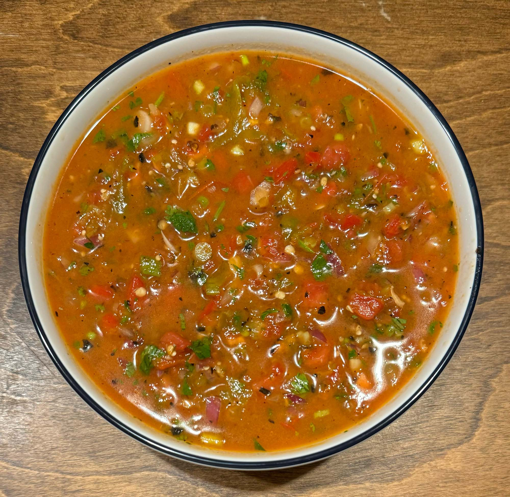

tasty cooking

Salsa
Prep: 5 min
Ready: 25 min
14 CUPS
Condiments
Gluten-Free
Healthy
Quick
Spicy
Simple and fresh salsa. Half cooked and half raw to give it a perfect flavor.
Ingredients
12 roma tomatoes
6 tomatillos
¼ white onion
1 red onion
3 pieces garlic
2 serrano peppers
1 jalapeño pepper
1 tsp olive oil
1 tsp salt
½ tsp pepper
1 tbsp chicken bouillon
half of a little bunch of cilantro
4 green onions
2 limes
Instructions
Heat skillet to medium and make sure hot.
Add 6 tomatoes, 6 tomatillos (peel from husk), 1/4 white onion, 3 pieces garlic, 2 serrano's, 1 jalapeño to skillet.
Continuosly move around while charring all sides, ~10 minutes.
Add everything from skillet to blender, add 1 teaspoon olive oil, 1 teaspon salt, pepper, 1 tablespoon chicken bouillon and pulse.
Chop and add 1 red onion, 6 tomatoes, half of a little bunch of cilantro, 4 green onions.
Squeeze 2 limes into salsa and mix.